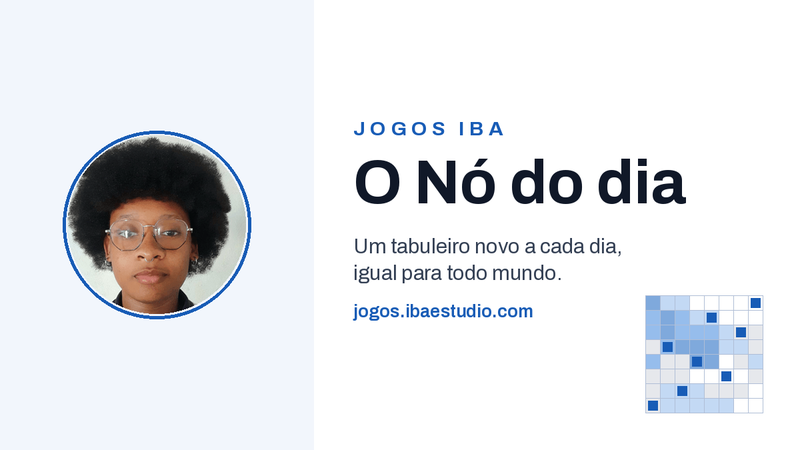
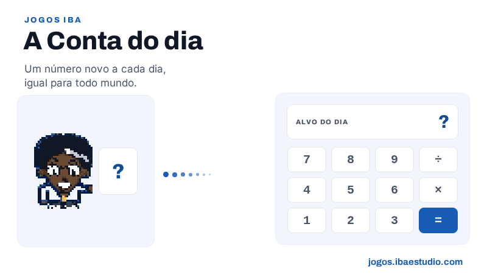

Catálogo de mini jogos
Dois jogos diários, iguais para todo mundo e com um desafio novo à meia-noite de Brasília. Cada partida leva de 1 a 5 minutos.

O Nó do dia
Um tabuleiro novo a cada dia, igual para todo mundo. Coloque as oito peças de modo que cada linha, cada coluna e cada região tenha exatamente uma, sem nenhuma encostar na outra.
Abrir o tabuleiro de hoje

A Conta do dia
Um número novo a cada dia, igual para todo mundo. Escreva uma conta que chegue nesse número usando o tanto de caracteres avisado, em até seis tentativas. Vale mais de um caminho: qualquer conta que feche vale.
Abrir a conta de hoje
Nenhum jogo com esse nome ou nessa categoria.